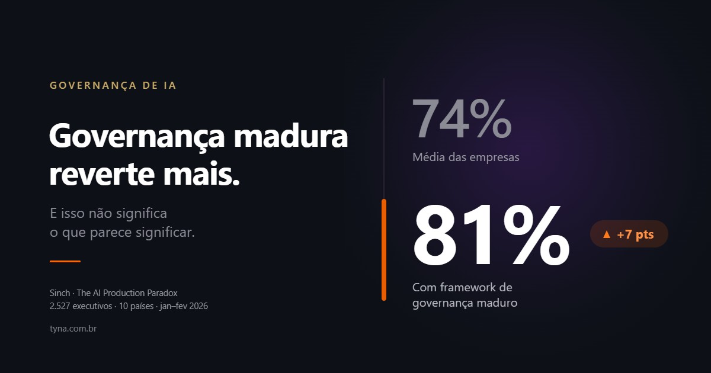

Governança de IA
Por que quem tem governança madura reverte mais agente de IA
74% das empresas já desligaram um agente de IA. Entre as que têm governança madura, 81%. O número mais alto não significa o que parece significar.

Saiu um número esta semana que a imprensa técnica noticiou e ninguém parou para explicar.
A Sinch ouviu 2.527 tomadores de decisão sênior em dez países, entre janeiro e fevereiro de 2026, sobre agentes de IA em comunicação com cliente. 74% já reverteram ou desligaram um agente que estava no ar. É um número alto e previsível — todo mundo que opera IA em produção esperava algo nessa faixa.
O número que ninguém comentou está na linha seguinte. Entre as organizações com frameworks de governança maduros, a taxa de reversão não cai. Ela sobe: 81%.
Quem investiu em governança reverte mais do que a média. Vale entender por quê, porque a leitura preguiçosa desse dado — "governança não funciona, é burocracia" — é exatamente a conclusão errada, e é a que mais vai circular.
Antes de interpretar: o que a pesquisa mede
Um cuidado que a cobertura não teve. O estudo da Sinch é sobre agentes de IA de comunicação com cliente — atendimento, mensagem, relacionamento. Não é sobre IA em geral, não é sobre copiloto de código, não é sobre análise de dados. É o recorte onde o erro do agente chega direto ao cliente, sem ninguém no meio.
Isso importa para não esticar o número além do que ele suporta. Mas também é o que torna o dado relevante para quem decide: é justamente nesse recorte que a reversão custa reputação, e não só retrabalho.
Três leituras possíveis. Só uma se sustenta
A primeira é que governança não funciona. Se 74% revertem e os que governam revertem 81%, o investimento em governança seria inútil ou contraproducente. É a leitura que mais vai aparecer no LinkedIn nas próximas semanas, e ela confunde correlação com fracasso.
A segunda é que empresas com governança madura assumem projetos mais arriscados. Tem alguma verdade. Quem estruturou governança costuma ter permissão interna para colocar IA em processo mais crítico, e processo mais crítico quebra mais visivelmente. Mas isso explica uma parte pequena da diferença.
A terceira é a que se sustenta: reversão não é a falha. Reversão é o controle funcionando.
Desligar um agente que está errando é o comportamento correto. A empresa que não reverte, na maioria das vezes, não é a que acertou — é a que não tem como saber. Sem observabilidade, sem trilha de auditoria da decisão, sem alguém olhando a taxa de erro, o agente continua no ar respondendo errado, e ninguém abre um chamado porque ninguém percebeu.
Os 81% não medem quantas empresas falharam. Medem quantas conseguiram enxergar que precisavam parar.
Então o problema é outro — e a própria Sinch aponta
Se reversão é o controle operando, a pergunta muda. Não é "por que revertem tanto", é "por que precisou chegar até a produção para descobrir".
A pesquisa dá a pista. A Sinch afirma que investimento em governança sozinho não está resolvendo o problema, e aponta a infraestrutura como o principal preditor de falha: 84% dos times gastam pelo menos metade do tempo em infraestrutura de segurança.
Traduzindo: a política existe, o comitê existe, o documento foi aprovado — e a equipe que constrói o agente está gastando metade do tempo montando na mão o que a política pressupunha que já existisse.
É a distância entre governança escrita e governança aplicada.
A distinção que decide o resultado
Um documento que diz "o agente não deve prometer prazo de entrega" não impede nada. O agente não lê a política. O que impede é a validação que barra a resposta contendo data quando o prazo não veio do sistema de logística.
O primeiro é política. O segundo é guardrail. Política é lida por pessoas e pode ser ignorada; guardrail é executado pela máquina e não admite exceção silenciosa.
Um framework de governança maduro no papel, sem guardrail em execução, produz exatamente o padrão da pesquisa: a empresa sabe o que deveria acontecer, descobre em produção que não está acontecendo, e reverte. O controle existe — só que ele age tarde demais, no fim da linha, em vez de agir dentro do fluxo.
O contraexemplo tem número
Vale olhar um caso onde a conta fechou do outro jeito.
Em um agente de pós-venda automotivo que atende pelo WhatsApp — o cliente fotografa o painel do carro, a IA interpreta o alerta e responde na hora — a assertividade medida foi de 84,2%, com 80% de resolutividade direta e 86,8% de NPS no pós-venda. Replicado em cinco marcas do grupo Stellantis (fonte: blip.ai).
Repare no que 84,2% significa: cerca de um em cada seis casos a IA não resolve corretamente sozinha. Pelo padrão da pesquisa, era candidato natural a reversão.
Não foi revertido, e o NPS ficou em 86,8%. A diferença não está no modelo ser melhor. Está em o escalonamento humano ter sido desenhado antes de ir a produção, com destino, canal e critério definidos — de modo que o caso que a IA não resolve tem para onde ir, em vez de virar cliente travado numa repetição.
Governança não busca eliminar o erro. Busca garantir que o erro tenha caminho de saída.
A leitura da Tyna
O dado dos 81% é bom para a conversa de governança justamente porque é desconfortável. Ele desmonta duas frases que aparecem em quase toda reunião de comitê.
A primeira é "nós somos maduros nisso, está sob controle". Segundo a pesquisa, as organizações com framework maduro são as que mais reverteram. Maturidade em governança de TI não transfere automaticamente para governança de IA — são objetos diferentes. TI clássica trata de infraestrutura, rede e segurança da informação; IA trata de comportamento probabilístico, viés, explicabilidade e alucinação. Um programa exemplar de ISO 27001 não diz nada sobre o que o agente responde quando o cliente reformula a pergunta.
A segunda é "então vamos esperar a regulação definir". Vale registrar onde a regulação brasileira realmente está: o PL 2338/2023 foi aprovado no Senado em 10 de dezembro de 2024 e segue na Câmara dos Deputados, aguardando parecer do relator na comissão especial. Não é lei. Circula muito conteúdo dando a entender que já vigora — não vigora. E os 74% de reversão aconteceram sem nenhuma lei obrigando ninguém a nada, o que é o ponto: o incidente não espera o Diário Oficial.
Na prática, três coisas separam quem reverte de quem corrige antes:
Escopo de autonomia escrito antes da produção. A lista do que o agente decide sozinho e do que exige aprovação. Escrita antes, não depois do primeiro incidente.
Guardrail em execução, não em documento. De escopo, de ação, de dado e de saída. O controle mais barato continua sendo o de dado: o campo que não trafega não vaza.
Trilha de auditoria da decisão. O que o agente leu, o que decidiu e o que executou, recuperável depois do fato. Sem os três registros não dá para distinguir alucinação de dado desatualizado na base — e essa distinção é a diferença entre corrigir o modelo e corrigir o cadastro.
Quem tem essas três coisas também reverte, às vezes. A diferença é que reverte um fluxo, na terça-feira, antes de o cliente notar — e não o programa inteiro, depois da reunião em que alguém perguntou por que a empresa prometeu um prazo que não existia.
---
Fontes. Sinch, *The AI Production Paradox*: 2.527 tomadores de decisão sênior, dez países, pesquisa de janeiro a fevereiro de 2026 (sinch.com). Recorte Brasil publicado em 14 de agosto de 2026 por Olhar Digital, com 76% de agentes em produção no país e 80% de reversão. Tramitação do PL 2338/2023 no Senado Federal.